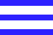
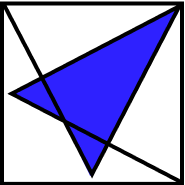

<div class="navbar" [ngClass]="{ 'navbar--logged': loggedIn }">
  <div class="navbar__mobile-toggle" (click)="openNav()">
    
  </div>
  <div class="navbar__header-group" routerLink="">
    
    <h1 class="navbar__header-group-title">
      Meta<span class="navbar__header-group-title--accent">Med</span>
    </h1>
  </div>

  <div class="navbar__menu">
    <nav class="navbar__menu-nav">
      <ul class="navbar__menu-nav-list">
        <li class="navbar__menu-nav-item" routerLink="auth">Access</li>
      </ul>
    </nav>
    <div class="navbar__menu-icons">
      
      
    </div>
  </div>
</div>
